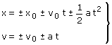

| Ecuaciones del m.u.a 
Signos No se pone signo a las variables x, v pues estas lo llevan incluido. Cuando x, v sean incógnitas, al despejarlas se obtendrá el valor con su signo y cuando sean datos habrá que sustituir la variable por el valor con su signo Hay que poner signo a los parámetros x0, a, v0 pues estos representan el módulo de las correspondientes magnitudes |